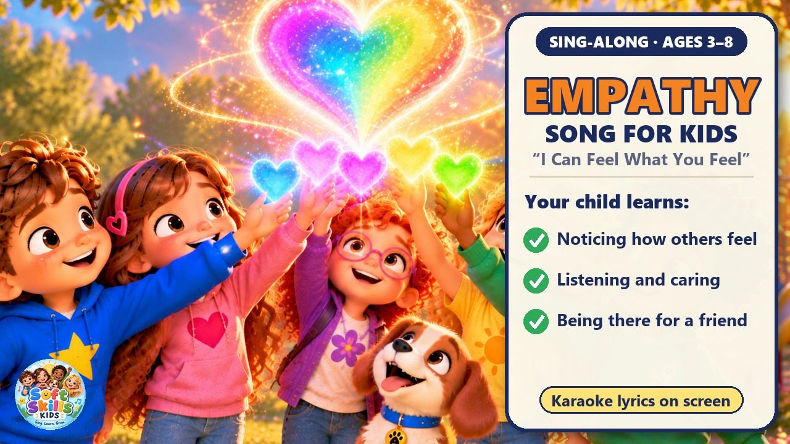
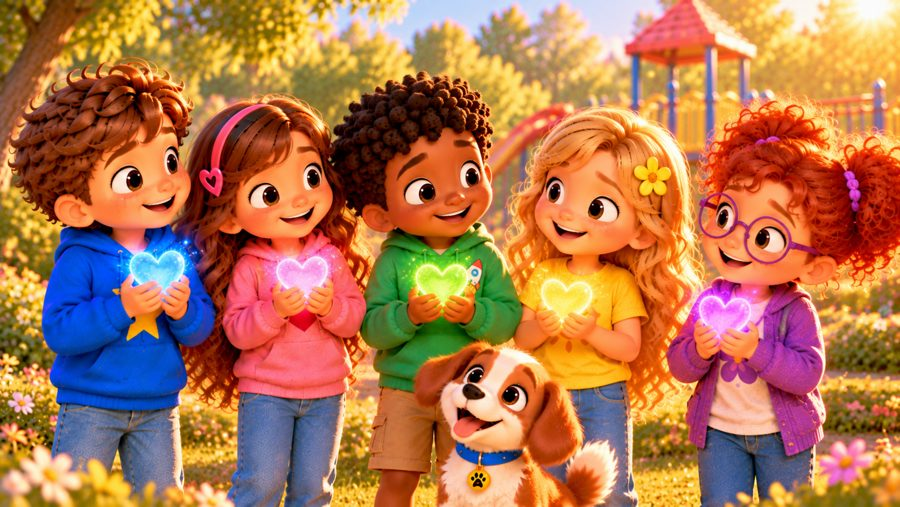
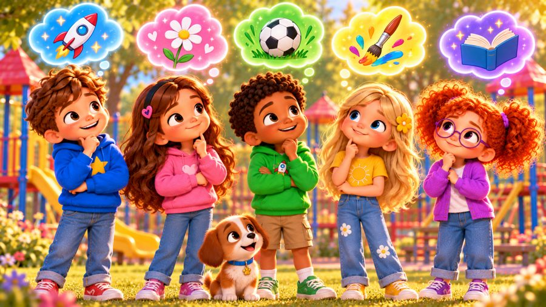

I Can Feel What You Feel
An empathy song for kids! 💛 Sing along with Max, Mia, Jay, Lily, Rosie and Buddy the puppy as they learn to notice when a friend needs them — and to look, listen and care.
"I Can Feel What You Feel" is a sing-along empathy song for kids that teaches children to notice how others feel, ask "Are you okay?", listen without having to fix everything, and simply be there for a friend. With big karaoke lyrics on screen, it's perfect for preschool, kindergarten and early elementary kids (ages 3–8), at home or in the classroom.

▶💡 Why this skill matters: empathy
Empathy — understanding how someone else feels — is at the heart of friendship, kindness and respect. It is something no machine can truly replace, and it grows with practice. When reading a story or watching a show, ask “How do you think she feels? What could help her?”
👨👩👧 What your child learns
- Noticing how others feel — "Look around, someone might need a friend today"
- Asking kindly: "Are you okay? Do you want to talk?"
- Listening and caring — you don't have to fix it, you can just be there
- Celebrating when friends are happy and staying with them when they're sad
- Different hearts, different stories — kindness speaks the same
💬 Talk about it after the song
- How can you tell when a friend feels sad?
- What can you say to a friend who is sitting alone?
- When did someone make you feel better just by being with you?
🏅 Quiz & Certificate
Watched the song together? Now read each question aloud — your child points to the right picture. Answer all 6 questions and your child earns a printable certificate!
🔒 The name is only used to draw the certificate on your device. We don't save or send anything.
You did it! 🎉
All 6 answers are right! Type your child's name to make the certificate.
🖨️ Free printables
Free for home and classroom use. Print on A4 or Letter paper.
🖼️ Scenes from the song




🎵 More songs


🎤 Lyrics – I Can Feel What You Feel
Hey, hey!
Look around!
Someone might need a friend today!
Can you see?
Can you hear?
Can you feel?
Let's find out together!
I see my friend sitting alone,
Looking down, feeling low,
I don't know exactly why,
But I can stop and ask them, "Hi!"
"Are you okay?"
"Do you want to talk?"
"I can listen,
We can take a walk."
I may not know just how you feel,
But I can listen,
I can care,
I can help make things feel real.
I don't have to fix it,
I don't have to know,
I can simply be beside you,
And let you know:
I can feel what you feel,
I can listen, I can care,
I can see when someone needs me,
I can always be there!
I can feel what you feel,
Even if we're not the same,
Different hearts and different stories,
But kindness speaks the same!
See it!
Hear it!
Care and share!
I can feel what you feel!
If my friend is feeling happy,
I can smile and celebrate,
If my friend is feeling nervous,
I can tell them, "It's okay."
If they're angry, I can listen,
If they're sad, I can stay,
Sometimes having someone with you
Makes a better day.
I don't have to say,
"I know exactly how you feel,"
I can say,
"Tell me about it,"
And show them that I care.
I don't have to fix it,
I don't have to know,
I can simply be beside you,
And let you know:
I can feel what you feel,
I can listen, I can care,
I can see when someone needs me,
I can always be there!
I can feel what you feel,
Even if we're not the same,
Different hearts and different stories,
But kindness speaks the same!
See it!
Hear it!
Care and share!
I can feel what you feel!
If you smile...
I smile with you!
If you cry...
I'll stay with you!
If you're worried...
I'll listen too!
If you're lonely...
I'll sit with you!
We may be different,
We may not think the same,
But every heart has feelings,
And every heart deserves a name!
Look with your eyes!
Listen with your ears!
Open up your heart!
And show that you care!
Look!
Listen!
Understand!
Help when you can!
I can feel what you feel,
I can listen, I can care,
I can see when someone needs me,
I can always be there!
I can feel what you feel,
Even if we're not the same,
Different hearts and different stories,
But kindness speaks the same!
Look!
Listen!
Care!
We're all connected everywhere!
I can feel what you feel!
I can care!
I can share!
Look...
Listen...
Care...
That's empathy!
I can feel what you feel.